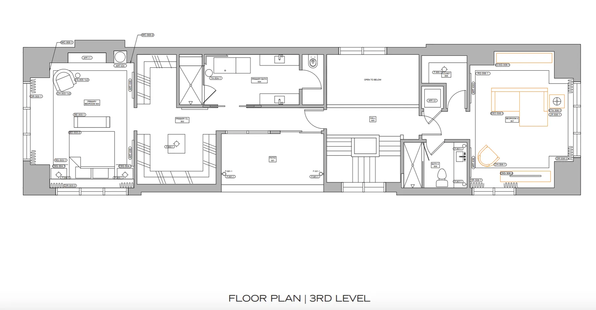
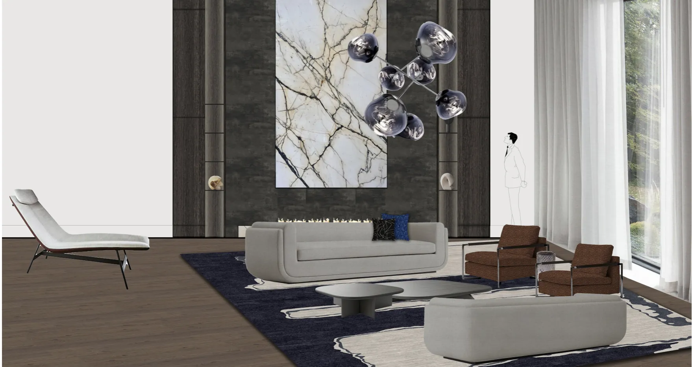
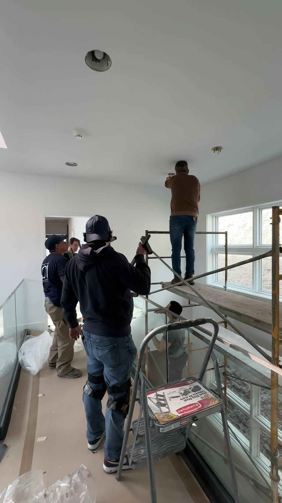
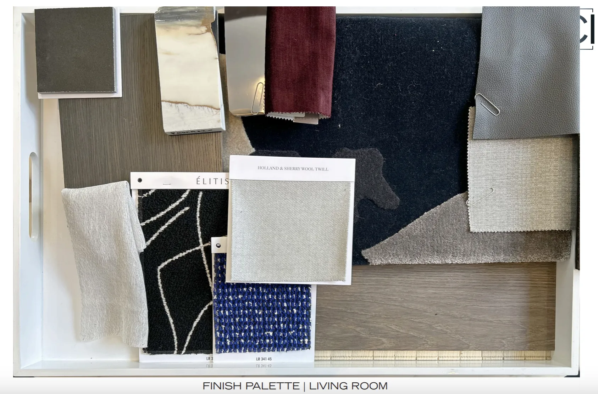
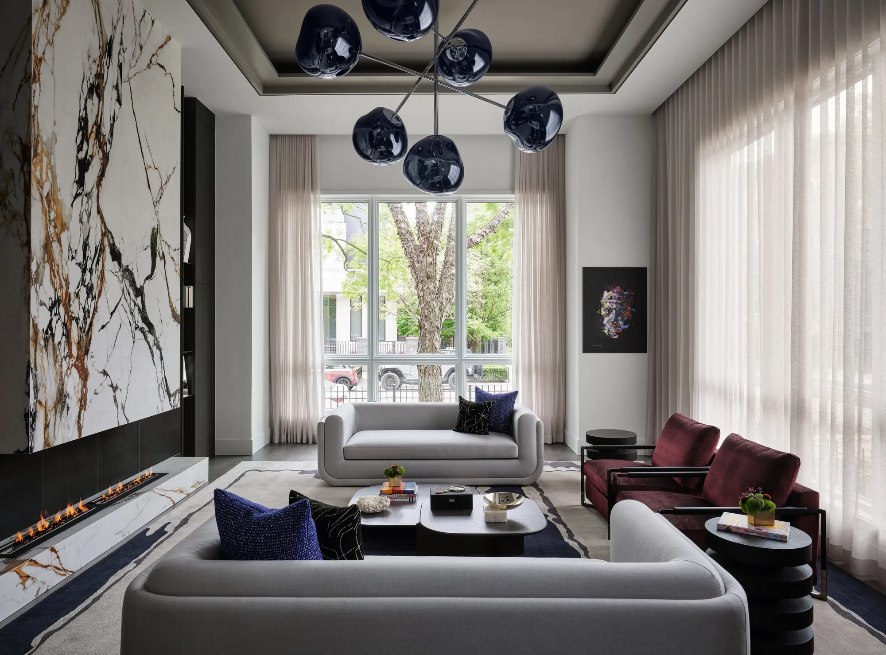
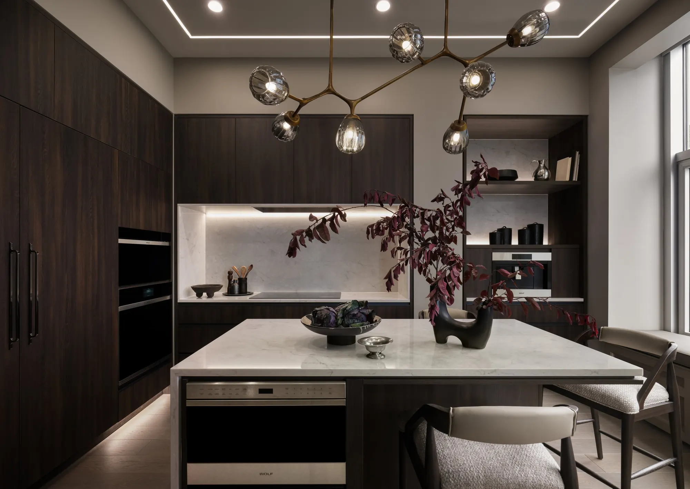
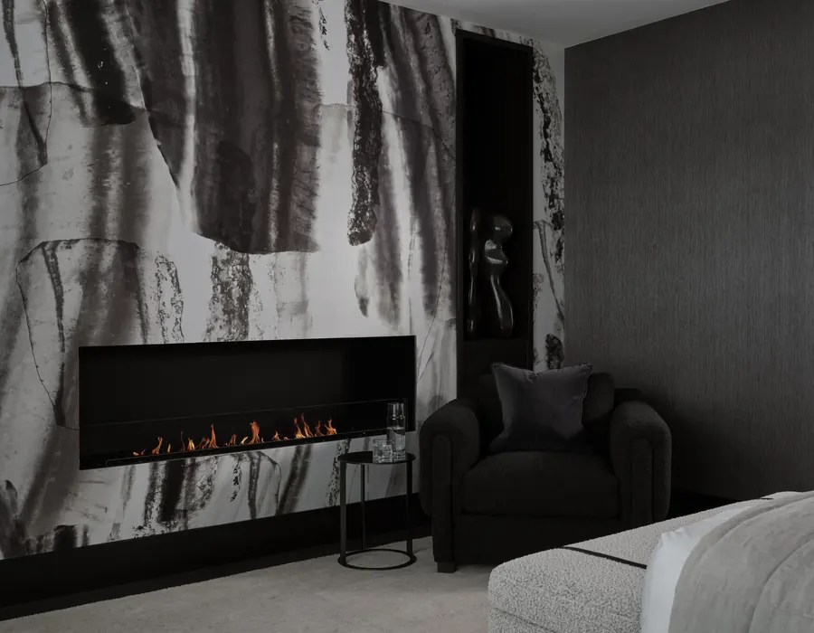

It should reflect how you want to live.
Support how you feel.
Perform as beautifully as it appears.
This is turnkey.
CI Design + Build brings architecture, interior design, construction, furnishings, art, wellness, and project management together under one roof.
One integrated team handling every step,
one seamless process, from concept through the night our team onboards + moves you in.
The average person spends 75% of their day at home. The quality of that environment shapes everything — your lifestyle, your health, your longevity goals.
How you want to wake up, entertain, recharge, recover, collect, gather, how you want light to move through your morning. What you want your life to feel like and be in five, ten, or twenty years from now.
Rather than designing around a predetermined aesthetic, we design around your lifestyle. Architecture, materials, lighting, furnishings, technology, art, and wellness become part of one considered environment.
The traditional renovation model fragments responsibility across architects, designers, contractors, vendors, and installers — each accountable for only one piece of the outcome.
We bring the disciplines together from the beginning.
Every factor/step — architecture, interior design, construction, furnishings, art, wellness, procurement, installation, and project management — under one roof, one team, one curated by the CI process from day one.
Our curated CI process is built to protect it.
We save our clients an average of 20% of their project time. Time you don't get back — unless you have the right team from the beginning.
The result is what concierge-level service actually looks like — you remain involved where your perspective matters most, while CI handles everything else. The seamless CI process, clear communication, and a home where every detail was considered before you ever had to ask.
Discover CI Design + Build


Every CI home begins with a different client, a different residence, a different way of living.
What connects them is the standard of thinking behind every decision — proportion, craftsmanship, precision, and an uncompromising commitment to the finished whole.
[Project description]
[Project description]
[Project description]
[Project description]
[Project description]


Turnkey is not a service list. It is a different way of managing the entire project.
At CI, the people designing your residence work directly with the people building it. Budgets, materials, engineering, procurement, and field conditions are considered together — never handed off between separate firms.
That connection creates clarity. Fewer gaps. Better decisions. A home that performs as well as it looks.
The complete CI experience. Architecture, interior design, construction, furnishings, art, wellness, installation, and move-in managed by one team, under one roof.
Explore CI TurnkeyIntegrated architecture, interior design, and construction for clients who want the built environment expertly coordinated while retaining independence beyond it.
Explore CI CoreDesign-build extended through furnishings, art, and styling — for a residence that feels considered in every layer, not just every room.
Explore CI CuratedBetter living, designed in. Light, air, water, sleep, recovery, and technology integrated from the ground up — not bolted on at the end.
Explore CI WellnessWe begin with questions — not about style, but about life.
The answers become the foundation.
From architecture and circulation to lighting, materials, wellness systems, and art — every decision earns its place.





The CI process simplifies a complex renovation. We make something complex simple for you as the owner.
Discover
Your residence, priorities, lifestyle, and vision.
Define
Scope, strategy, design direction, and the right CI service level.
Design
Architecture and interiors developed together, informed by construction realities from the start.
Build
Our field team executes with the design intent already understood.
Curate
Furnishings, art, technology, and finishing layers complete the residence.
Deliver
Installation, final detailing, and move-in readiness. A home ready to be lived in.

Our clients are accomplished people with demanding lives. They appreciate exceptional design — and they expect communication, transparency, and the confidence that comes from knowing the right team is managing the details.
CI is built for clients who trust expertise, value collaboration, and want one accountable team responsible for the whole.





[Approved client testimonial.]
— [Client / Project]01 · VIDEO · [Project title][Approved client testimonial.]
— [Client / Project]02 · VIDEO · [Project title]Every aspect of your project — design, construction, furnishings, and final installation — is managed by one integrated team. One experience. One accountable firm.
At CI, turnkey means exactly that — we handle everything. Design, construction, furnishings, art, installation, and move-in, all managed by one integrated team under one roof. You walk into a finished home, not a finished renovation. From the first conversation to the night you move in, every detail is coordinated, every decision is managed, and every layer of the experience is delivered at a concierge level. One team. One standard. Complete responsibility.
Projects follow two phases: Design & Planning, then Construction. A detailed schedule is developed early and refined as decisions are finalized — realistic timelines, clear milestones.
Transparently. Three components: pass-through costs at CI preferred pricing, a management fee based on project complexity and duration, and a clearly defined overhead and profit structure.
Yes — however, items not procured through CI fall outside our coordination. That includes tracking, receiving, inspection, storage, delivery, installation, and any warranty or damage claims.
As involved as you want to be. We bring decisions to you at the right moment. The details in between are our responsibility.
It depends on scope. We'll advise clearly during the discovery phase.
Yes.
Significant residential renovations and new builds in Chicago and South Florida.

A better home begins with understanding the life you want to build inside it.
Tell us what you're considering. We'll define what comes next.
Begin Your Better Life